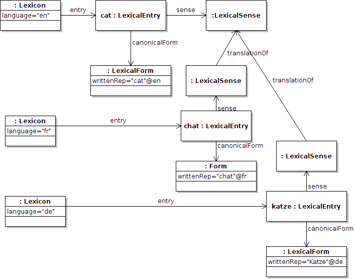
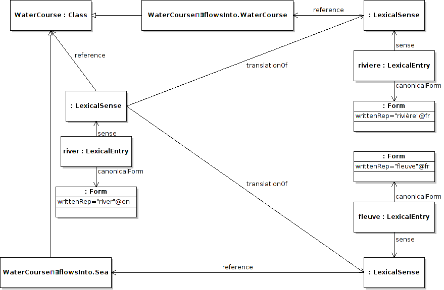

Next: Summary of vocabulary introduced Up: Variation Module Previous: Form variants Contents
Translated variants are for the most part naturally included within the lemon model by the use of references, as translated variants should share the same reference. Hence the ontology should act as an intermediate layer linking lexical entries of different languages. However, in some cases the reference may not be available, or it may be of interest to mark lexical entries as translations if they do not share the same reference. In such cases, sub-properties of senseRelation can be used. It should be clear that this translation link is between senses of words as the term should be disambiguated, even if there is not a clear reference for the translation. For example, we will consider the case of “cat” translated into German, and French as “Katze” and “chat” respectively.
:lexicon_en lemon:entry :cat ; lemon:language “en” . :lexicon_de lemon:entry :katze ; lemon:language “de”. :lexicon_fr lemon:entry :chat ; lemon:language “fr”. :cat lemon:canonicalForm [ lemon:writtenRep “cat”@en ] ; lemon:sense :cat_sense . :chat lemon:canonicalForm [ lemon:writtenRep “chat”@fr ] ; lemon:sense [ isocat:translationOf :cat_sense ] . :katze lemon:canonicalForm [ lemon:writtenRep “katze”@de ] ; lemon:sense [ isocat:translationOf :cat_sense ] . isocat:translationOf rdfs:subPropertyOf lemon:senseRelation .
As can be seen the translation arc does not in itself state the language pairs in the translation, however the language can be extracted from either the lexica containing the term or from the xml:lang special property.
Modeling translation as variation may be particularly useful if you wish to indicate that a word is a translation of another word. For example, consider the French words “rivière” and “fleuve” which are both translations of the English word “river”. However following the definitions of these words (these are given in section ![[*]](crossref.png) ) it may be sensible to map the French words to the anonymous subclasses
WaterCourse⊓∃flowsInto.WaterCourse and WaterCourse⊓∃flowsInto.Sea respectively, hence we get the following modeling:
) it may be sensible to map the French words to the anonymous subclasses
WaterCourse⊓∃flowsInto.WaterCourse and WaterCourse⊓∃flowsInto.Sea respectively, hence we get the following modeling:
:river lemon:canonicalForm [ lemon:writtenRep “river”@en ] ;
lemon:sense :river_sense .
:river_sense lemon:reference ontology:WaterCourse .
:riviere lemon:canonicalForm [ lemon:writtenRep “rivière”@fr ] ;
lemon:sense [ lemon:reference [ a owl:Class
owl:equivalentTo [ owl:intersectionOf (
ontology:WaterCourse ;
owl:Restriction [
owl:onProperty ontology:flowsInto ;
owl:allValuesForm ontology:WaterCourse
]
)
isocat:translationOf :river_sense
]]] .
:fleuve lemon:canonicalForm [ lemon:writtenRep “fleuve”@fr ] ;
lemon:sense [ lemon:reference [ a owl:Class
owl:equivalentTo [ owl:intersectionOf (
ontology:WaterCourse ;
owl:Restriction [
owl:onProperty ontology:flowsInto ;
owl:allValuesForm ontology:Sea
]
)
isocat:translationOf :river_sense
]]] .

John McCrae 2012-07-31